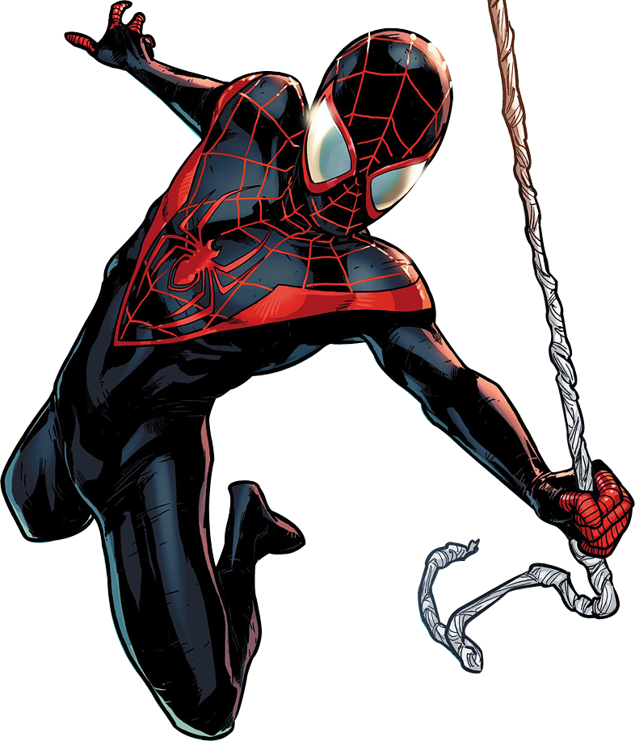

A história de Miles Morales começa em Ultimate Comics: Spider-Man #1, em setembro de 2011. Nessa história, Miles é apresentado como um jovem de 13 anos, que vive com seus pais no Brooklyn, Nova York. Ele estuda em uma escola particular e tem um tio chamado Aaron Davis, que é um criminoso conhecido como o Prowler.
Watch the Trailer